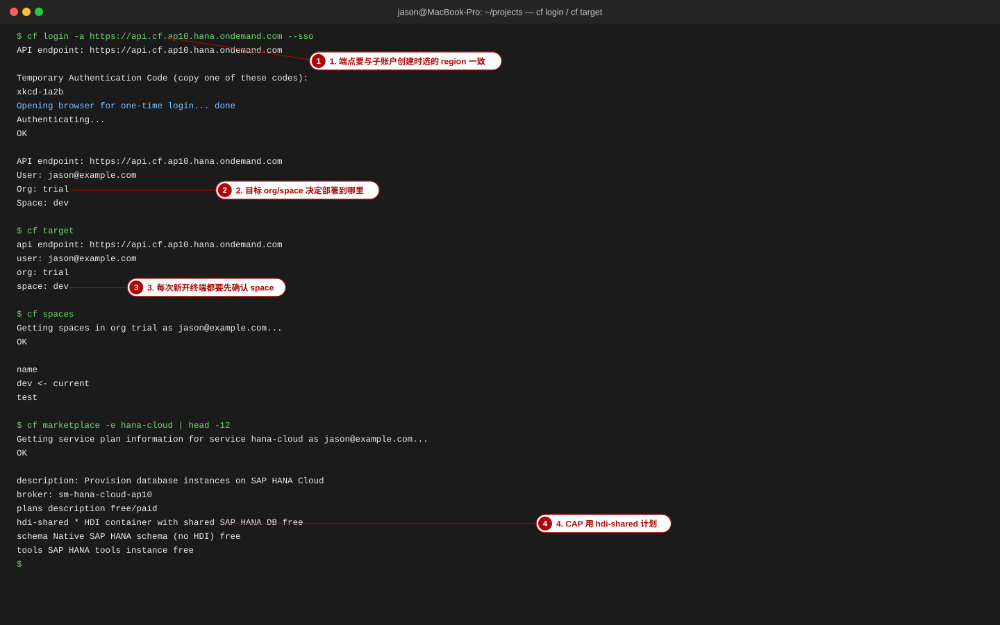
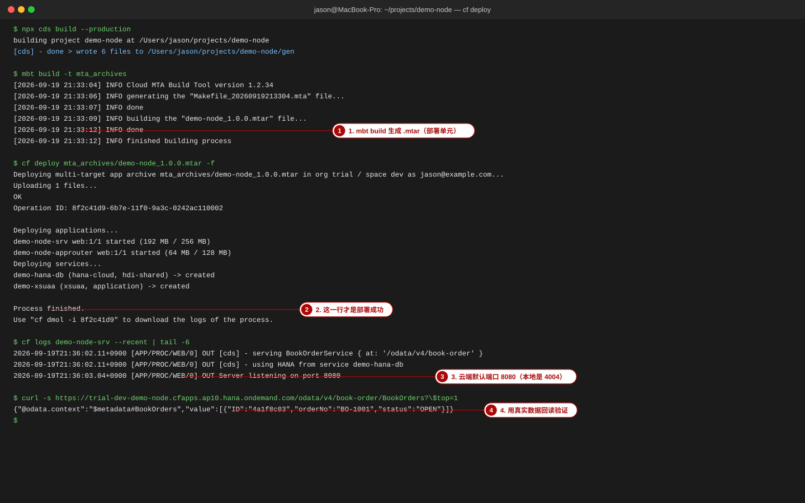

首页 / 命令与注解速查
命令与注解速查：一页查完本课程用到的每条命令
npm / cds / curl / cf / btp / mvn 全表 · CDS 语言与注解 · OData 查询与状态码 · 每条命令给「用途 + 典型输出 + 常见坑」
本页读完你能做到
看着错误信息就知道该敲哪条命令，不用翻 10 个页面
说清 cds serve / cds watch / cds run 的区别，以及 cds deploy 支持与不支持的数据库
知道配置该写在 package.json 的 cds 段、.cdsrc.json 还是环境变量，以及哪个优先级更高
能背出 OData 函数 / 动作 / 草稿的 URL 形态，并用 curl 在本课程示范项目上验证
能区分 401 / 403 / 404 / 405 / 409 —— 这四个数字是本课程业务规则的主要「断言面」
本页的「真实输出」是怎么来的（先看这条）
下表中标「真实输出」的终端内容，都是在本机 2026-09-19 实跑所得：Node.js 22.23.2 ·
@sap/cds-dk 9.9.6 · @sap/cds 9.9.3 · @sap/cds-compiler 6.9.5 ·
@cap-js/sqlite 2.4.3，项目为 project-code/demo-node（服务路径
/odata/v4/book-order）。本机没有安装 cf / btp / mbt 的 CLI ，
所以这些命令的用法来自官方文档、输出示例来自课程的高保真画面；凡是本站没实测的条目一律写成 ~命令
并注明「以官方文档为准」 ，最后一节有完整的「未验证清单」。
1. 速查总索引
先定位，再跳转。第三列是「只记一条就记它」。
我想查 去哪节 最常用的那一条
装依赖 / 把 Node 换成 LTS §2 npm / npx npm ci · npx -y node@22 -p process.execPath cds 有哪些命令、某个参数什么意思§3 cds 命令全表 cds help <command> 配置写在哪里、为什么没生效 §4 cds 配置速查 cds env --sources CDS 类型 / 注解 / 关联写法 §5 CDS 语言速查 key ID : UUID; ... : Association to X;OData URL 怎么写、函数动作怎么调 §6 OData 查询速查 GET /BookOrders(ID=…,IsActiveEntity=true)/submitOrder 用 curl 验证业务规则、看状态码 §7 curl 速查 curl -s -o /dev/null -w '%{http_code}' -u alice:alice … 部署到 Cloud Foundry、看日志 §8 cf CLI 速查 cf deploy mta_archives/demo-node_1.0.0.mtar 登录 BTP、开 dev space、连云端库 §9 btp CLI 与 BAS cds bind db --to <实例名> + cds watch --profile hybrid Java 运行时怎么构建 / 怎么起 §10 mvn 速查 mvn spring-boot:run （在 srv/ 下）「我就是不知道该敲什么」 §11 决策表 按目的查 → 命令
一个前提：本课程所有命令都在项目根目录执行
本课程示范项目的根目录是 project-code/demo-node，里面有 db/（模型与种子数据）、
srv/（服务）、app/（Fiori）、test/（测试）、package.json（npm 脚本 +
cds 配置）。除了 mvn 需要在 srv/ 下执行，其余命令都在根目录执行 ——
这是「配置读不到 / 表找不到」这类问题的头号原因。

画面 1 cli_s02 高保真重绘 本站自绘（figkit 高保真画面） 2. npm / npx：装依赖、换 Node 版本、npm scripts
目的 命令 说明与坑
确认当前 Node node -v 课程要求 20 / 22 LTS ；本站实测 v22.23.2。非 LTS 或过旧/过新的版本会让 better-sqlite3 找不到原生绑定（见下方「常见坑」） 不改系统、临时用 Node 22 npx -y node@22 -p process.execPath 打印 Node 可执行文件的绝对路径（真实输出见下）。-p 就是 --print，在临时装好的 node 里求值 把这个 22 放进当前 shell 的 PATH export PATH="$(dirname "$(npx -y node@22 -p process.execPath)"):$PATH" 只影响当前终端窗口；重开终端要再执行一次。示范项目 README 用的就是这一招 首次安装依赖 npm install 按 semver 解析（本项目 @sap/cds: ^9）；README 记录的实测结果是 added 328 packages 按 lockfile 精确安装（CI / 云端构建） npm ci 会先删掉 node_modules ；mta.yaml 的 before-all 与 buildpack 用的都是它。没有 package-lock.json 时直接失败项目内装 CAP CLI npm i -D @sap/cds-dk@^9 推荐做法：CLI 进 devDependencies，团队与 CI 版本一致。@sap/cds 本身不含 cds 命令 装测试包 npm i -D @cap-js/cds-test 若 chai 版本冲突（peer 要求 chai@^6，本项目是 ^5），用 npm i -D @cap-js/cds-test --legacy-peer-deps 看项目里装了哪些 CAP 包与版本 npx cds version 真实输出见下；出现 ELSPROBLEMS 提示时按它说的 npm install 修 列出 / 运行脚本 npm run · npm start · npm test npm run 不带参数会列出 scripts 全部条目全局装 CLI（~未实测 ） ~npm i -g @sap/cds-dk 官方文档的安装方式；本站为「项目内安装」。以官方文档为准
2-1 真实输出：Node 22 与 CLI 版本清单
bash 复制
$ npx -y node@22 -p process.execPath
/Users/jason/.npm/_npx/52027bd8fc0022aa/node_modules/node/bin/node
$ export PATH="$(dirname "$(npx -y node@22 -p process.execPath)"):$PATH"
$ node -v
v22.23.2
$ npx cds version
@sap/cds-dk 9.9.6 ./node_modules/@sap/cds-dk
@sap/cds 9.9.3 ./node_modules/@sap/cds
@sap/cds-compiler 6.9.5 ./node_modules/@sap/cds-compiler
@sap/cds-fiori 2.3.0 ./node_modules/@sap/cds-fiori
@cap-js/db-service 2.11.3 ./node_modules/@cap-js/db-service
@cap-js/sqlite 2.4.3 ./node_modules/@cap-js/sqlite
cds.home ./node_modules/@sap/cds
cds.root ~/Desktop/work/training/sap-cap/project-code/demo-node
npm root -l ./node_modules
Node.js 22.23.2 ~/.npm/_npx/52027bd8fc0022aa/node_modules/node/bin/nodecds version 的 cds.root 就是你当前生效的项目根——命令敲错目录时，这一行会立刻暴露 。
2-2 npm scripts 约定（本课程示范项目的真实 scripts）
script 实际执行的命令 用途 / 什么时候用
npm start cds-serve起服务，不监视 文件变化。本地验收 / 跑集成测试时用它，端口与日志稳定 npm run watch cds watch改文件自动重启 + 浏览器 livereload。开发与看 Fiori 时用它 npm run deploy cds deploy --to sqlite:db.sqlite建表 + 灌 db/data/*.csv npm run build cds build --production生成部署产物 gen/（mbt build 之前的一步） npm test mocha --reporter spec --timeout 20000 test/*.test.js单元 + OData 集成测试（cds.test） npm run lint:model cds compile db/schema.cds srv/book-order-service.cds --to sql「模型能不能编译成 SQL」的快速检查，不启动服务
json 复制
"scripts": {
"start": "cds-serve",
"watch": "cds watch",
"deploy": "cds deploy --to sqlite:db.sqlite",
"build": "cds build --production",
"test": "mocha --reporter spec --timeout 20000 test/*.test.js",
"lint:model": "cds compile db/schema.cds srv/book-order-service.cds --to sql"
}cds-serve / cds-deploy / cds-test 是 @sap/cds-dk 装进
node_modules/.bin/ 的可执行文件 （和 cds 同一个包），所以在 npm script 里可以直接写，
不需要 npx。
常见坑
Node 版本不对 → 原生模块加载失败 。用系统自带的非 LTS Node 跑 cds serve，会得到
code: 'ERR_DLOPEN_FAILED' 与 server shutdown（本站真实复现过）。
对策：先 export PATH=…npx node@22…（见 2-1），再起服务。npm start 不会热重载.cds / .js 后 curl 还是旧结果时，
先确认自己起的是 npm run watch 还是 npm start。npm ci 会删 node_modulespackage-lock.json 与 package.json 完全一致，否则直接报错退出。npx 会把下载的包缓存到 ~/.npm/_npx/$(npx … -p process.execPath) 求值。

画面 2 cli_s03 高保真重绘 本站自绘（figkit 高保真画面） 3. cds 命令全表（用途 / 典型输出 / 常见坑）
cds 命令来自 @sap/cds-dk。下表的「存在性」一列按 cds-dk 9.9.6 的
cds help 与 bin/ 目录 核对过：标 有 的命令本站能用，标
help 未列出但有 的实测可用但不在总帮助里，标 不存在 的会打印 Unknown command。
命令 存在性 用途 典型输出 常见坑
cds help / cds <cmd> ? / --help 有 看命令总表与单命令用法 USAGE + COMMANDS 列表 子命令帮助里出现的参数就是全部可用参数；不要凭记忆写参数 cds version 有 列出 CLI / 运行库 / 编译器等包与版本 见 §2-1 真实输出 ELSPROBLEMS 表示依赖不一致；--markdown 可输出表格cds init 有 新建项目骨架 created ./db ./srv ./app …默认当前目录；--add 可一次带多个特性。在已有项目里执行会覆盖/新增文件 cds add 有 给已有项目加特性（nodejs java sqlite hana h2 xsuaa mta sample test lint …） 写 package.json、生成 mta.yaml / xs-security.json 等 会改配置文件，执行前先 git commit ；cds add h2 是给 CAP Java 用的 cds compile 有 把模型编译成 SQL / CSN / EDMX 等 见 §3-2 默认输出 CSN(json)；--to csn 也能跑但帮助里没有列出 ，正式写法用 --to json。有 [ERROR] 时也可能退出码为 0 cds watch 有 起服务 + 监视变化自动重启 见 §3-3 等价于 cds serve all --with-mocks --in-memory?；配置/依赖变更常常不触发重启 ，要手动重启 cds serve 有 起服务（不监视） server listening on { url: 'http://localhost:4004' }端口占用 → EADDRINUSE；用 --port 换端口。cds serve <file.cds> 可以只加载指定模型文件 cds run help 未列出但有 cds serve all 的快捷方式（帮助原文：cds run is just a convenient shortcut for cds serve [--project <project>] ）同 cds serve 老教程里的 cds run 就是这个；参数与 cds serve 完全一样 cds mock 有 用 mock 实现起服务（cds serve --with-mocks 的快捷方式） 同 serve 用于「只想看接口形状、还没有实现」时 cds deploy 有 建库 + 灌数据（只支持 sqlite / hana ） 见 §3-1 --to h2 不支持 ；写错目标会回落到默认 sqlite 并照常建库 ，容易误以为成功cds build 有 生成部署产物（gen/） @[cds] - done > wrote N files to …/gen默认 --for 由项目推导；--production 是 --profile production 的简写 cds env 有 查看生效配置 见 §4 排查「配置没生效」的第一条命令 ；--sources 告诉你每个值从哪来cds repl 有 交互式 JS 环境（可 --run 起项目） Welcome to cds repl v 9.9.3是 REPL，脚本/CI 里不要用；cds repl -r . 可连当前项目 cds bind 有 把本地项目绑定到云端服务实例（hybrid） 见 §3-4 信息写进 .cdsrc-private.json（不含密码 ）；默认 profile 是 hybrid；执行前要 cf login 且 space 正确 cds test help 未列出但有 跑项目里的测试文件 Found these matching test files: test/odata.test.js / 1 total-l 只列不跑；-o/-n 只跑/跳过匹配的用例。cds help test 才有用法cds lint 有 env / model 检查（基于 ESLint） 真实输出：ESLint is not installed. Please install ESLint in your project using 'npm i -D eslint'. 它自己不装 ESLint ；要先 npm i -D eslint，再用 cds add lint 生成配置cds import 有 从外部源导入模型 生成/改写 .cds 本课程不使用；只在「从 S/4 EDMX 导入」时用到 cds parse 有 只做语法解析（不展开引用） parsed 形态的 CSN 排「语法错误在哪一行」时比 compile 更直接 cds up 有 构建并部署到云（CF / Kyma） 内部会调用 build + 部署命令 需要已登录的 cf / kubectl；本课程部署走 mbt build + cf deploy（§8） cds debug 有 调试本地或云端应用 Node：cds watch --debug；Java：mvn spring-boot:run + -agentlib:jdwp… 调试云端要用 cf ssh，先 cf ssh-enabled 确认 cds completion 有 安装 / 移除 shell 补全 写 shell 配置 cds add completion 更常用；装完要重开终端cds install · cds start · cds update 不存在 — 真实报错：Unknown command 'install'. Similar commands are cds init / cds inspect 打错命令时 cds 会给出「最相近的命令 + 全部支持的命令」清单，照着改即可
3-1 cds deploy / cds build（真实输出）
bash 复制
$ cds deploy --to sqlite:db.sqlite # 或 npm run deploy
> init from db/data/sap.training.bookorder-Customers.csv
> init from db/data/sap.training.bookorder-Books.csv
> init from db/data/sap.training.bookorder-BookOrders.csv
> init from db/data/sap.training.bookorder-BookOrderItems.csv
/> successfully deployed to db.sqlite
$ cds deploy db/schema.cds --to h2 # 想部署到 H2 会怎样
Deploying into a H2 database is not yet supported
> init from db/data/sap.training.bookorder-Customers.csv
...
/> successfully deployed to db.sqlite # ← 注意：回落到了默认的 sqlite
$ cds deploy db/schema.cds --to h2 --dry # --dry 只打印 SQL，不执行
DROP VIEW IF EXISTS sap_training_bookorder_OrderItemView;
DROP TABLE IF EXISTS sap_training_bookorder_BookOrderItems;
CREATE TABLE sap_training_bookorder_Books (
ID INTEGER NOT NULL,
title NVARCHAR(120) NOT NULL,
...
);
选项 含义 / 真实取值
--to sqlite:<路径>本地文件库；参数省略时用 cds.requires.db.credentials.url（本项目是 db.sqlite） --to hana:<服务实例名>部署进 HDI 容器；需要 cf login 或 hybrid 绑定。--no-build 跳过 cds build --to h2不支持 （帮助原文：Supported databases: sqlite, hana）。CAP Java 的本地 H2 走 cds add h2 + Spring Boot，与本命令无关--dry只打印 DDL，不执行——改完 schema 想先看 SQL 就先用它 --out / -o <file>把 DDL 写到文件（不能与 --to hana 同用） --with-mocks连同被 mock 的服务的表一起建 --auto-undeployHDI 部署时自动删除模型中已不存在的资源
bash 复制
$ cds build --production # = cds build --profile production，部署前的第一步
building project demo-node at /Users/jason/projects/demo-node
@[cds] - done > wrote 6 files to /Users/jason/projects/demo-node/gen
$ cds build --for java # CAP Java：生成 schema.sql / CSN / EDMX 与 POJO
$ cds build --for hana -s db -o db/src # 只构建某个模块（--src、--dest）3-2 cds compile：三种最常用目标（真实输出）
bash 复制
$ cds compile db/schema.cds srv/book-order-service.cds --to sql
CREATE TABLE sap_training_bookorder_Books (
ID INTEGER NOT NULL,
title NVARCHAR(120) NOT NULL,
author NVARCHAR(80),
price DECIMAL(9, 2) NOT NULL,
currency NVARCHAR(3) DEFAULT 'JPY',
stock INTEGER DEFAULT 0,
PRIMARY KEY(ID)
);
$ cds compile db/schema.cds --to json # CSN（帮助里列出的正式写法）
{
"namespace": "sap.training.bookorder",
"definitions": {
"sap.training.bookorder.Books": {
"kind": "entity",
"elements": { "ID": { "key": true, ... } }
}
}
}
$ cds compile srv/book-order-service.cds --to edmx | head -3
<?xml version="1.0" encoding="utf-8"?>
<edmx:Edmx Version="4.0" xmlns:edmx="http://docs.oasis-open.org/odata/ns/edmx">
<edmx:Reference Uri="https://oasis-tcs.github.io/odata-vocabularies/vocabularies/Org.OData.Capabilities.V1.xml">
$ cds compile db/schema.cds --to sql --dialect hana | head -4 # 换方言看 HANA 的列类型
CREATE TABLE sap_training_bookorder_Books (
ID NVARCHAR(36) NOT NULL,
...
目标 取值 什么时候用
--to sql/csn/edmx 中的三个sql、json（CSN 的正式目标名）、edmx分别用于：看数据库 DDL、看编译后的模型结构、看 OData 元数据 完整目标列表（帮助原文） json, yml, edm, edmx, edmx-v2, edmx-v4, edmx-w4, edmx-x4, sql, hana, hdbtable, cdl, xsuaa, openapi, asyncapi本课程只用得上 sql / json / edmx / openapi --dialectsqlite、h2、postgres、hana必须与 --to sql 同用；默认 sqlite -4 / --forodata、sql只做「展开」不生成后端格式，用于排查注解/关联的展开结果 --flavorsources、files、parsed、xtended、inferred（默认）--flavor files 可以列出「到底加载了哪些文件」——排查野文件时很好用--service / --lang / -o服务名或 all / 语言列表或 all / 输出目录 多服务项目里只编译某一个；多语言时生成 i18n
3-3 cds serve / cds watch（真实启动输出）
bash 复制
$ cds watch --port 4399
cds serve all --with-mocks --in-memory? --port 4399
( live reload enabled for browsers )
___________________________
[cds] - loaded model from 3 file(s):
srv/book-order-service.cds
db/schema.cds
node_modules/@sap/cds/common.cds
[cds] - connect to db > sqlite { url: 'db.sqlite' }
[cds] - using auth strategy { kind: 'mocked' }
[cds] - serving BookOrderService {
at: [ '/odata/v4/book-order' ],
decl: 'srv/book-order-service.cds:4',
impl: 'srv/book-order-service.js'
}
[cds] - server listening on { url: 'http://localhost:4399' }
[cds] - server v9.9.3 launched in 594 ms启动日志要看的四行：loaded model from N file(s) （模型清单，多了/少了文件都说明这里有问题）、
connect to db （连的是哪个库）、using auth strategy （本地是 mocked）、
serving … at （服务路径，本课程是 /odata/v4/book-order）。
常见坑：模型编译失败时服务根本不起来
如果 app/ 或 db/ 下的 .cds 有语法错误，cds watch / cds serve
会先打印 [ERROR] 文件:行:列: … 然后直接退出 （不会有 server listening），
curl 得到的是「连不上（curl: (7) Failed to connect）」而不是 4xx/5xx。排错顺序：
cds compile（全部 .cds 文件）--to sql → 修完再起服务。
3-4 cds bind / cds env（hybrid 与配置排查）
bash 复制
$ cf login -a https://api.cf.ap10.hana.ondemand.com --sso # 先登录，并确认 space 正确
$ cds bind db --to demo-hana-db # 绑定云端 HDI 容器实例
[bind] - Retrieving data from Cloud Foundry...
[bind] - Binding db to Cloud Foundry managed service demo-hana-db:demo-hana-db-key with kind hana.
[bind] - Saving bindings to .cdsrc-private.json in profile hybrid.
[bind] - TIP: Run with cloud bindings: cds watch --profile hybrid
$ cds watch --profile hybrid # 本地服务 + 云端数据库
$ cds env get requires.db --profile hybrid --resolve-bindings # 看真实凭据（只在终端显示，不落盘）bind 的输出为什么可以贴进聊天窗口
cds bind 只把「凭据从哪里取」写进 .cdsrc-private.json（CF API 端点、org、space、实例名、key 名），
不写密码 ；密码在每次 cds watch 启动时动态向 CF 取。所以这个文件可以进 git 忽略列表后长期保留，
而 cds env … --resolve-bindings 的输出含明文凭据，不要外发 。
本节测试（§2–§3）
项目要求在根目录执行命令；如果 srv/ 里执行 cds deploy 会发生什么？
cds deploy --to h2 的真实行为是什么？CAP Java 的本地 H2 又该怎么做？要「不重启服务、只把当前模型编译成 DDL 看字段类型」，用哪条命令？
cds watch 与 npm start 的差别，以及在什么场景下必须用后者？
对应自测题见 自测 · 速查 。
4. cds 配置文件速查
排「配置没生效」永远按这个顺序查：① 我在哪个目录 → ② cds env --sources 说值从哪来 →
③ 我用的是哪个 profile → ④ 我改的文件是不是被更高优先级覆盖了 。
4-1 配置来源与优先级（低 → 高，官方文档顺序）
# 来源 说明
1 @sap/cds 内置默认值如 requires.db、requires.auth、folders 的默认结构 2 ~/.cdsrc.yaml（或 .json / .js）用户级默认值（本机全局） 3 ./.cdsrc.yaml（或 .json / .js）项目级静态配置 ，插件也常往这里写4 ./package.json 的 cds 段本课程示范项目用的是这一种 5 ./.cdsrc-private.json用户私有项目配置；cds bind 写的就是它 6 ./default-env.json已废弃，改用 cds bind 7 ./.env一行一个 name=value 8 ./..env（profile 专属，如 .hybrid.env）按 profile 命名的 env 文件 9 process.env.CDS_CONFIG见 4-4（可传 JSON 串 / 文件 / 目录） 10 process.env（CDS_…、NODE_ENV、PORT…）命令行临时覆盖，优先级很高 11 process.env.VCAP_SERVICES云端自动注入的服务绑定（CF 部署后生效） 12 ~/.cds-services.jsondevelopment profile 的服务绑定注册表
4-2 package.json 的 cds 段（示范项目原文）
json 复制
{
"dependencies": { "@sap/cds": "^9" },
"devDependencies": { "@cap-js/sqlite": "^2", "@sap/cds-dk": "^9", "chai": "^5", "mocha": "^10" },
"cds": {
"requires": {
"db": { "kind": "sqlite", "credentials": { "url": "db.sqlite" } },
"auth": { "kind": "mocked" }
}
}
}写成 "requires": { "auth": "mocked" } 这种简写也行（kind 的语法糖）。本项目没写
profiles 段，所以 mocked 对所有 profile 生效 ——这一点生产环境很重要，见 4-3。
设置 取值 含义 / 用时
cds.requires.db.kindsqlite本地文件库（需 @cap-js/sqlite），配 credentials.url: "db.sqlite" hanaHDI 容器；本地用 cds bind 走 hybrid，云端由 VCAP_SERVICES 自动提供 postgres（~ ）用 @cap-js/postgres；本课程未使用，以官方文档为准 h2仅 CAP Java （cds add h2 + Spring Boot 数据源）；Node.js 运行时不支持cds.requires.db.credentials.urldb.sqlitesqlite 的库文件路径，相对项目根 :memory:内存库，进程退出即丢（cds watch 显示的 --in-memory? 就是这个开关） — 用 cds bind 时不要手写凭据 ，让 bindings 决定 其它常用键 cds.data / cds.requires.db.data种子数据目录（真实值 ["db/data", "db/csv", "test/data"]） cds.folders.db / .srv / .app目录约定，改过目录名才需要显式配置
4-3 requires.auth.kind：六种取值与真实差异
kind它做什么 怎么用 / 常见坑
mockedHTTP Basic 认证 + 内置 mock 用户（alice / bob / carol / dave / erin / fred / me / yves），默认还有 "*": true 放行任意用户 开发默认。真实坑：-u nosuch:wrong 也返回 200 （验收脚本里就有一条这样的断言）；要用 users + "*": false 收紧。不能进生产 dummy每个请求都当成特权用户，@requires / @restrict 全部失效 只在「临时关权限」时用。坑：用它测匿名 401 永远测不出来 （总是 200） basic同样走 Basic，但不加载内置 mock 用户 ，用户完全自己配 想要「测试固定用户集」时用；配置格式同 mocked 的 users jwt校验 XSUAA 签发的 JWT（签名、iss、aud、过期时间），角色来自 scope 生产默认。需要 npm add @sap/xssec；本地测要拿到真 token（见 ⑧ 权限 ） xsuaajwt 的扩展：额外把 SAML 属性映射到 user.attr（如 attr.familyName）要用 XSUAA 属性做 @restrict 判断时选它 ias（~ ）用 SAP Identity Authentication 签发的 JWT；token 里不含 scope 本课程未使用；授权需要自己补。以官方文档为准
json 复制
"cds": {
"requires": {
"auth": {
"kind": "mocked",
"users": {
"alice": { "password": "alice", "roles": ["admin"] },
"bob": { "password": "bob", "roles": ["OrderViewer"] },
"*": false // ← 不收掉这一行，任何用户名/口令都能通过
}
}
}
}两个真实坑（都在本课程示范项目里验证过）
mocked 不校验密码-u 任意名:任意口令 就会通过，
想「只认自己配的用户」必须显式写 "*": false。CDS_ENV=production 不会覆盖你显式写的 mockedCDS_ENV=production cds env get requires.auth.kind 在示范项目里仍然返回
mocked（因为 package.json 没有按 profile 区分）。上云前必须把认证改成
jwt / xsuaa，或改成按 profile 写：
json 复制
"cds": { "requires": { "auth": {
"[development]": { "kind": "mocked" },
"[production]": { "kind": "jwt" }
} } }4-4 profiles 与环境变量（含实测输出）
项 说明
profile 的判定顺序 ① --production 参数 → ② --profile <name> → ③ NODE_ENV → ④ CDS_ENV；不指向 production 时自动启用 development 按 profile 写配置 在任意层级用 "[production]": { … } 包起来；cds deploy --for hybrid、cds build --production 都是 profile 的语法糖 development默认 profile。本地开发：sqlite / mocked production生产：认证默认 jwt、绑定从 VCAP_SERVICES 读取、cds build --production 用它 hybrid本地连云端服务：cds bind 写入、cds watch --profile hybrid 使用 CDS_ENV用环境变量选 profile，可逗号分隔多个：CDS_ENV=production cds run CDS_CONFIG三种形式：JSON 串 （CDS_CONFIG='{"requires":{"auth":{"kind":"dummy"}}}'）、JSON 文件 （CDS_CONFIG=./my-cdsrc.json）、目录 （CDS_CONFIG=/etc/secrets/cds） CDS_<配置路径>按路径覆盖任意配置项，层级用 _ 连接、大小写不敏感（如 CDS_requires_db_kind=hana） CDS_USER_HOME改「用户级目录」的位置（影响 ~/.cdsrc.*、~/.cds-services.json 的查找） PORT / NODE_ENV监听端口 / Node 环境（同时参与 profile 判定） VCAP_SERVICES / VCAP_APPLICATIONCF 部署后由平台注入；本地不要手写
bash 复制
$ cds env --sources # 每个值到底从哪来（排查第一步）
Current cds.env was loaded from these sources:
process.env
/Users/jason/…/demo-node/package.json
/Users/jason/…/demo-node/node_modules/@cap-js/sqlite/package.json
/Users/jason/…/demo-node/node_modules/@sap/cds-fiori/package.json
/Users/jason/…/demo-node/node_modules/@sap/cds/lib/env/defaults.js
$ cds env get requires.db # 真实输出
{
"impl": "@cap-js/sqlite",
"credentials": { "url": "db.sqlite" },
"data": [ "db/data", "db/csv", "test/data" ],
"pool": { "max": 1 },
"kind": "sqlite"
}
$ CDS_requires_db_kind=hana cds env get requires.db.kind
hana
$ CDS_CONFIG='{"requires":{"auth":{"kind":"dummy"}}}' cds env get requires.auth.kind
dummy
$ CDS_ENV=production cds env get requires.auth.kind
mocked # ← package.json 里显式写了 mocked，production 默认值被它压住
文件 / 命令 作用 能不能进 git
package.json 的 cds 段团队共享的项目配置 可以 （示范项目就是这么做的）.cdsrc.json同上，适合配置多、不想塞进 package.json 时 可以 .cdsrc-private.jsoncds bind 写的绑定元数据（无密码 ）建议不 进 git（含 org / space / 实例名） .env / .hybrid.env一行一个 name=value 的本地环境变量 不要 进 gitcds env ls / get <key> / --json / --keys / --process-env分别看全部、看某一项、JSON 输出、只看顶层键、只看 process.env —
5. CDS 语言速查
模型都落在 db/schema.cds（领域模型）与 srv/*.cds（服务定义）里。下表所有类型映射都用
cds compile types.cds --to sql （默认 sqlite 方言）与 --dialect hana
实跑核对过。
5-1 常用类型 → 物理列（真实编译结果）
CDS 类型 sqlite 列 HANA 列 备注
String(n)NVARCHAR(n)NVARCHAR(n)超长用 LargeString LargeStringNCLOBNCLOB长文本 Integer / Integer64INTEGER / BIGINTINTEGER / BIGINT数量用 Integer Decimal(p,s)DECIMAL(p, s)DECIMAL(p, s)金额一律用它 ，不要用 DoubleDoubleDOUBLEDOUBLE浮点，金额会掉精度 BooleanBOOLEANBOOLEAN— Date / TimeDATE / TIMEDATE / TIME默认值可用 $now：orderDate : Date default $now; DateTime / TimestampSECONDDATE / TIMESTAMPSECONDDATE / TIMESTAMPmanaged 用的就是 TimestampUUIDNVARCHAR(36)NVARCHAR(36)主键：key ID : UUID;（演示项目的订单用 UUID，图书用 Integer） Binary(n) / LargeBinaryVARBINARY(n) / BLOB同左 本课程未用 type X : Decimal(13,2);类型别名，编译时直接展开成底层类型（演示项目的 OrderSummaryRow 结构体就是这样写的） enum { OPEN; SUBMITTED; CLOSED; }在类型后写枚举值；它只是文档性约束 ，列上不会生成 CHECK 约束，非法值要靠服务层校验 Association to X / Composition of many X见 5-3；array of Type 用于函数返回结构体数组
5-2 元素修饰符与最常用注解
写法 类型 作用 / 本课程用例
key元素修饰符 主键。视图必须有 key 才能暴露为 OData 实体 ，否则 cds2edm 报
Expected entity to have a primary key not null元素修饰符 数据库层非空：title : String(120) not null; default <值>元素修饰符 status : String(10) default 'OPEN';、orderDate : Date default $now;@readonly注解（输入校验） 客户端不能改：OrderItemView 整个实体只读 → POST 返回 405 ；totalAmount 只读（服务端算） @mandatory注解（输入校验） 必须给值，否则服务端拒绝。与 not null 不同 ：前者是输入校验、后者是数据库约束 @assert.range / @assert.format / @assert.target注解（输入校验） 范围、格式、外键存在性检查；都在输入校验那一组里 @title注解（UI） 字段标签：orderNo : @title: '订单号'；不写就显示技术名 @odata.draft.enabled注解（服务层） 启用草稿：实体多出 IsActiveEntity / HasActiveEntity / HasDraftEntity 与 draftActivate / draftEdit / draftPrepare，并多出草稿表 @cds.redirection.target注解（编译器） 两张实体来自同一底层实体时必须显式指定重定向目标 ，否则编译报
can't auto-redirect …。演示项目里 BookOrderItems 就是这种情况 @path: '/odata/v4/book-order'注解（服务路径） 固定服务 URL。不写 CAP 会按服务名推导（BookOrderService → /odata/v4/book-order），但显式写才稳定 @(requires: 'authenticated-user')服务级注解 整个服务要求已认证 → 匿名请求 401 @restrict实体/动作级注解 细粒度授权（grant / where / to），见 ⑧ 权限 @cds.persistence.skip（~ ）持久化注解 不生成数据库对象（用于纯计算实体）；本课程未使用，以官方文档为准
5-3 关联与组合：两种写法对照
cds 复制
// 写法 A：Association（普通外键）—— 本课程示范项目用的是这种
entity BookOrders : managed {
key ID : UUID;
orderNo : String(16) not null;
customer: Association to Customers; // 多对一
items : Association to many BookOrderItems on items.order = $self; // 一对多（要写 on 条件）
}
entity BookOrderItems : managed {
key ID : UUID;
order: Association to BookOrders; // 反向：编译出 order_ID 列在明细表
book : Association to Books;
}
// 写法 B：Composition（组合）—— 父子的强归属关系
entity Header : managed {
key ID : UUID;
items : Composition of many Item on items.header = $self;
}
entity Item {
key ID : UUID;
header: Association to Header;
}
对比项 AssociationComposition
语义 普通引用（外键） 「子表属于父表」，删除父表会级联子表 编译出的列（真实 DDL） 子表出现 order_ID / book_ID 子表出现 header_ID；父表没有额外列 父侧 on 条件 to many 必须写 ：on items.order = $self同样要写反向条件（on items.header = $self） CSV 种子数据 能正常灌 （表头写 order_ID 这类物理列名）坑：父侧没有列，$expand 可能返回空数组——本课程因此明确不用 Composition 什么时候选它 主数据引用、允许共享/独立存在的数据 真正的「发票-行项目」这类强归属；草稿的整树编辑也走它
5-4 @sap/cds/common 常用内置命名空间（真实导出）
cds 复制
using { cuid, managed } from '@sap/cds/common'; // 本课程示范项目只用到这两个
entity BookOrders : managed { key ID : UUID; ... } // created/modified 四件套 + 时间戳
导出名 内容 说明
cuidkey ID : UUID让实体自带 UUID 主键（本例未用 cuid 而是手写 key ID : UUID，等价） managedcreatedAt / createdBy / modifiedAt / modifiedBy自动维护的审计字段；用 Projection 暴露时不要覆盖它们 temporalvalidFrom / validTo时态数据（配合 @cds.valid.from/to） Currency / Country / Language / TimezoneAssociation to sap.common.Currencies 等带 codelist 的复用类型。坑 ：本地 sqlite 上 codelist 校验会带来额外表与约束，演示项目因此用 String(3) currency default 'JPY' 而不是 Currency sap.common.CodeList / TextsAspect / FlowHistory代码表、多语言文本、流程历史 aspect 自定义代码表时继承 CodeList（自带 name / descr） UserString(255)语义化类型名（如 approver : User;）
6. OData 查询速查（本课程用到的）
服务路径固定为 /odata/v4/book-order（对应 @path 注解）。实体集：
Books、Customers、BookOrders、BookOrderItems、
OrderItemView（只读）。下面的例子都在本机实跑过。
6-1 查询选项
选项 作用 本课程真实例子（含实际返回）
$select只取需要的列 /Books?$top=2&$select=ID,title,price → {"value":[{"ID":1001,"title":"SAP CAP 实战","price":4200},…]}$filter过滤。字符串用单引号，函数可用 contains() /Books?$filter=contains(title,'CAP') → 2 行（SAP CAP 实战、ABAP 到 CAP 迁移指南）$orderby排序，desc 倒序 /Books?$orderby=price desc&$top=2&$select=title,price → 5200 / 4800$top / $skip取前 N 条 / 跳过 N 条 /BookOrders?$orderby=orderNo desc&$top=1&$select=orderNo → 最新订单号$expand展开关联（可再加子选项） /BookOrders?$filter=orderNo eq 'BO-1001'&$expand=items($select=quantity,amount) → 3 条明细$count连同总数一起返回 @odata.count /Books?$count=true&$top=1&$select=title → "@odata.count":5$value取单个原始值（纯文本，不是 JSON） /Books(1001)/title/$value → SAP CAP 实战$metadata服务元数据（含 CAP 生成的注解） /odata/v4/book-order/$metadata → XML
shell 里写 $ 的两个坑
在双引号里 $select 会被 shell 当成变量展开成空串，所以要么用单引号
（'…?$top=2&$select=title'），要么转义（"…?\$top=2"）。
另外 & 在双引号里安全，但在不加引号 时会被 shell 解释成「后台执行」。
6-2 函数与动作的 URL 形态
类型 HTTP URL 形态（本课程真实路径） 实测结果
实体集 GET /BookOrders200（匿名 401） 单条 GET /Books(1001)200 导航属性（展开） GET /BookOrders(orderNo='BO-1001')/items200（`items` 是关联名） 无绑定函数（unbound function） GET /getOrderTotal(orderNo='BO-1003')200 {"@odata.context":"$metadata#Edm.Decimal","value":17400} 无绑定函数（无参数、返回结构体数组） GET /getOrderSummary()200，4 行 无绑定函数（找不到数据） GET /getOrderTotal(orderNo='BO-9999')404 绑定动作（bound action，带 key） POST /BookOrders(ID=<uuid>,IsActiveEntity=true)/submitOrder200；重复提交 409 ；空订单 400 草稿实体（draft）读数 GET /BookOrders(ID=<uuid>,IsActiveEntity=false)200（草稿行） 草稿激活（draftActivate） POST /BookOrders(ID=<uuid>,IsActiveEntity=false)/BookOrderService.draftActivate201；订单号重复 409 ；顾客不存在 400 草稿编辑 / 准备（~ ） POST …/BookOrderService.draftEdit、…/BookOrderService.draftPrepare本站只在 $metadata 里确认了它们存在（ActionImport），未逐个实调
为什么「函数」是 GET、「动作」是 POST
OData V4 里 Function 表示无副作用、可缓存 → GET ；Action 表示有副作用
（会改数据）→ POST 。本课程的 getOrderTotal / getOrderSummary 是函数（聚合查询），
submitOrder 是动作（状态迁移，会把 OPEN 改成 SUBMITTED）。
对动作发 GET 会得到 405 （本站实测）。
6-3 草稿（draft）速查
现象 / 字段 含义
IsActiveEntity=true / false同一实体的「正式行」与「草稿行」；打开 Fiori 编辑页时两者都会出现 HasActiveEntity / HasDraftEntity这条草稿是否已有正式行 / 这条正式行是否已有草稿 Common.DraftRoot 注解$metadata 里会出现它，说明这是草稿根实体新键的草稿表 建库后会多出 …_BookOrders_drafts 与 DRAFT_DraftAdministrativeData 表（npm run deploy 后查 sqlite 可见） 新建订单的返回 POST 到实体集返回的是草稿 （IsActiveEntity=false），不是 正式行
xml 复制
<!-- $metadata 里与草稿/计算有关的注解（本站真实抓取） -->
<Annotation Term="Common.DraftRoot"> … </Annotation>
<Annotation Term="Core.Computed"> … </Annotation>
<Annotation Term="Core.ComputedDefaultValue"> … </Annotation>
<Annotation Term="Capabilities.InsertRestrictions"> … </Annotation>6-4 状态码速查表（本课程断言用得最多的七个）
码 含义 本课程什么时候会看到它（真实用例）
200 OK 正常 GET、提交动作成功（submitOrder 返回 200） 201 Created POST 新建明细；草稿激活成功 （draftActivate → 201 并自动编号） 204 No Content DELETE 成功（丢弃草稿）400 Bad Request 业务校验失败：quantity: 0、book_ID: 9999、顾客不存在、空订单提交；URL 写错也一样（真实消息：
Parsing URL failed at position 43: Expected a whitespace but end of input found.） 401 Unauthorized 匿名请求被 @(requires: 'authenticated-user') 拦住（验收脚本第 2 条断言） 403 Forbidden 已登录但角色不够（本地 mock 角色与云端 XSUAA scope 不一致时最常见，见 ⑧ ） 404 Not Found 函数查不到数据（getOrderTotal(orderNo='BO-9999')）；实体/路径不存在 405 Method Not Allowed 对只读实体 POST（@readonly 的 OrderItemView）；对动作发 GET 409 Conflict 唯一性冲突：订单号重复（草稿激活）、重复提交已提交的订单 → req.reject(409, …)
把状态码当断言写
课程验收脚本就是这么做的：curl -s -o /dev/null -w '%{http_code}' -u alice:alice -X POST "$SVC/BookOrderItems" …
→ 期望 400。「4xx 是业务规则的一部分，不是错误」 ——把 409 / 400 写进测试，规则才算真的被验证过。
本节测试（§4–§6）
配置同时写在 package.json 与环境变量里，谁赢？用哪条命令能一眼看出？
为什么 CDS_ENV=production 在本课程的示范项目里没有 把认证切成 jwt？怎么改才对？
@readonly 与 not null 都在限制「必须/不能」，它们的层级差别是什么？为什么本课程明确避开 Composition？它会让 CSV 种子数据的哪一步失效？
对应自测题见 自测 · 速查 。